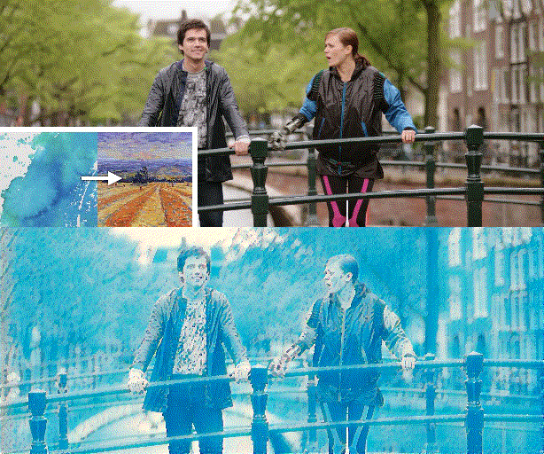
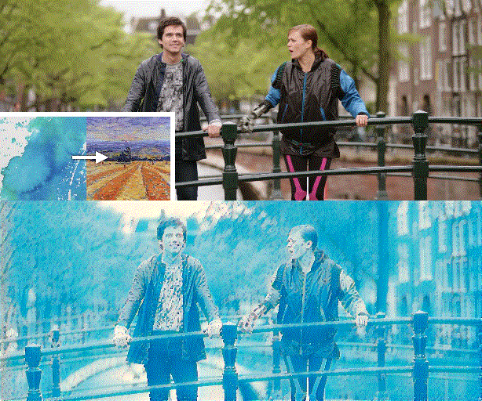

Figure 1. We propose a novel video style transfer framework, which can produce temporally consistent results and is highly robust to intense object movements and illumination changes. Furthermore, benefiting from the nice properties of our framework and model, we can enable features that traditional optical-flow-based methods cannot provide, such as dynamically changing styles over time.
Abstract
Recently, neural style transfer has drawn many attentions and significant progresses have been made, especially for image style transfer. However, flexible and consistent style transfer for videos remains a challenging problem. Existing training strategies, either using a significant amount of video data with optical flows or introduce single-frame regularizers, have limited performance on real videos. In this paper, we propose a novel interpretation of temporal consistency, based on which we analyze the drawbacks of existing training strategies, and derive a new compound regularization. Experimental results show that the proposed regularization can better balance the spatial and temporal performance, which supports our modeling. Combining with the new cost formula, we design a zero-shot video style transfer framework. Moreover, for better feature migration, we introduce a new module to dynamically adjust inter-channel distributions. Quantitative and qualitative results demonstrate the superiority of our method over other state-of-the-art style transfer methods.
Temporal Consistency via Training on Single-Frame
We mathematically model temporal consistency maintenance as mapping, from which a new regularization is derived. For long-term temporal consistency, we propose a strategy of sharing global features.
Figure 2. Performance of temporal consistency and stylization. Each data point represents an individual experiment. The strength of regularization is represented by different colors. A deeper color indicates a higher temporal loss weight. For the convenience of comparison, we additionally draw some light gray dotted lines. The proposed compound regularization has the best trade-off rates.
Consistent Video Style Transfer
Figure 3. Left: the proposed decorator block for inter-channel feature adjustment. Both target style features and input content features are fed into a shallow sub-network Filter Predictor to predict filters. Residual learning and dimensionality reduction are used to improve the efficiency. Right: The overall architecture of the proposed encoder-decoder style transfer network.
Resources
- Paper: [PDF]
- Code: Sorry that we cannot provide the corresponding code, but you can refer to the released code of our follow-up work, where we propose a new style loss relaxation scheme and further promote the performance.
Citation
@InProceedings{Compound2020,
author = {Wang, Wenjing and Xu, Jizheng and Zhang, Li and Wang, Yue and Liu, Jiaying},
title = {Consistent Video Style Transfer via Compound Regularization},
booktitle = {AAAI Conference on Artificial Intelligence},
month = {February},
year = {2020}
}
Selected Results
Figure 3. Quantitative evaluation of temporal consistency. For the proposed method, Baseline denotes the proposed image style transfer network, Blind denotes using Blind [1] for post-processing, Lt denotes training with temporal loss, and Global denotes using global feature sharing. Our models yields the lowest temporal loss for all temporal length.
Video Results
Related Follow-Up Work
Consistent Video Style Transfer via Relaxation and Regularization, Accepted by TIP [Website]
Reference
[1] Lai, W.-S.; Huang, J.-B.; Wang, O.; Shechtman, E.; Yumer, E.; and Yang, M.-H. 2018. Learning blind video temporal consistency. In Proc. European Conf. Computer Vision, 170–185.